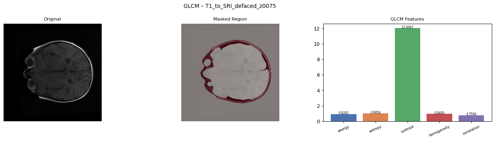

1. Two-Minute Overview
English: "Assignment 3 continues the same MRI project. Assignment 1 focused on filtering. Assignment 2 focused on segmentation and shape boundaries. In Assignment 3, we used the mask idea to extract numeric features from each selected MRI slice. First, the notebook loaded NIfTI MRI volumes from the KaggleHub chunk of BraTS-PEDs. It selected center slices and normalized them. Then it created a clean mask using Canny edge detection, closing, and largest connected component selection. From the masked region, it extracted GLCM texture features such as energy, entropy, contrast, homogeneity, and correlation. It also extracted geometric features such as area, centroid, perimeter, and circularity. These numbers formed a feature vector for each slice. Finally, Random Forest and SVM classifiers were trained to classify labels such as Enhancing, Necrotic, Edema, and Other. The notebook produced 50 feature vectors, confusion matrices, feature importance, GLCM plots, geometry plots, and classification accuracy reports."
Roman Urdu: "Assignment 3 mein hum ne MRI slice ko numbers mein convert kiya. A1 filtering tha, A2 segmentation aur shape tha, aur A3 feature extraction plus classification hai. Notebook ne MRI volumes load kiye, center slices select kiye, mask banaya, phir GLCM texture features aur geometric features nikale. Har slice ki aik row bani jise feature vector kehte hain. In features ko use kar ke Random Forest aur SVM classifiers train aur test hue. Output mein feature CSV, GLCM images, geometry images, confusion matrix aur accuracy report save hui."
Convert images into useful numbers.
50 feature vectors and classifier outputs.
This is small-scale ML classification, not medical diagnosis.
Important correction: Assignment 3 did not directly load the output CSV or images from Assignment 2. It reused the Assignment 2 idea of making a clean mask, but it ran that mask creation again on MRI slices.
Roman Urdu: A3 ne A2 ke saved outputs ko direct input nahi banaya. A3 ne A2 wala mask concept dobara use kiya, phir us mask se texture aur geometry features nikale.
2. Teacher-Given Objective
The objective was to extract useful features from segmented MRI regions and use those features for classification.
In simple words: image se important region lo, us region ke texture aur shape numbers nikalo, phir machine learning model ko woh numbers do.
"The objective of Assignment 3 was feature extraction and classification. We extracted GLCM texture features and geometric features from MRI slices, saved them as feature vectors, and trained Random Forest and SVM classifiers."
Do not say the model is clinically reliable. Safe wording: "It worked well on our small selected dataset chunk."
3. Dataset Visual Basics
First correction: One subject does not always mean three volumes. One subject can have many MRI volumes. The exact number depends on what files exist in the dataset and what the code selects.
Roman Urdu: Aik subject ke andar fixed 3 volumes zaroori nahi. Subject ke paas multiple MRI files ho sakti hain.
Subject means one patient/case
Example subject: brats_ped_00195_000
One 3D MRI file. Contains many 2D slices.
Another scan type for same subject.
Another 3D MRI scan.
Mask/annotation volume if available.
What do T1, T1CE, T2, FLAIR, and SEG mean?
| Volume type | Simple meaning | Roman Urdu | In Assignment 3 |
|---|---|---|---|
| T1 | MRI scan type where anatomy structure is visible in a particular contrast style. | MRI ka aik scan type. | Code mapped T1/T1N filename to Necrotic proxy label. |
| T1CE | T1 contrast-enhanced scan. Contrast agent makes enhancing tumor regions brighter. | Contrast wali T1 image jahan enhancing areas zyada clear ho sakte hain. | Code mapped T1CE/T1C filename to Enhancing proxy label. |
| T2 | MRI scan type often useful for fluid-rich regions and anatomy differences. | MRI ka dusra scan type. | Code mapped unmatched T2 files to Other. |
| FLAIR or FL | A scan type useful for edema/fluid-related abnormality visibility. | Edema/fluid wali abnormality ko highlight karne mein useful. | Code mapped FL/FLAIR filename to Edema proxy label. |
| SEG | Segmentation mask volume. It is not a normal MRI image. It stores annotation labels. | Yeh image nahi, mask/annotation file hoti hai. | A3 excluded SEG files from image processing. Final pipeline used SEG when available. |
SEG availability: Not every subject/file necessarily has a usable SEG mask. Some datasets include masks for some subjects. In Assignment 3 notebook, SEG files were excluded and labels came from file names. In the final pipeline, a paired SEG mask existed for the selected subject and was used.
Roman Urdu: SEG har jagah fixed nahi hota. A3 mein SEG use nahi hua label ke liye. Final pipeline mein selected subject ka SEG mask available tha.
Is there only one volume for each subject? No. A medical subject can have multiple MRI volumes. Think of one subject as one patient/case folder. Inside that case, there can be T1, T1CE, T2, FLAIR, and sometimes SEG. Each one is a separate 3D file.
Roman Urdu: Aik subject ke andar aik se zyada volumes ho sakti hain. T1 alag 3D file, T1CE alag, T2 alag, FLAIR alag, aur SEG mask alag.
One sample in Assignment 3
| Word | Visual meaning | Safe viva line |
|---|---|---|
| Subject | One patient/case folder or ID. | "Subject means one case, not one image." |
| Volume | One 3D MRI file inside the subject. | "A volume is a stack of slices." |
| Slice | One 2D image taken from a volume. | "A slice is one plane from the 3D MRI." |
| Single image | One slice saved or displayed as PNG. | "Single image usually means one exported 2D slice." |
| Sample | One selected slice with features and label. | "A sample is one training/testing row." |
4. Important Terms Before Code
| Term | Simple English | Roman Urdu |
|---|---|---|
| Feature | A useful number that describes an image region. | Image ke region ko describe karne wala number. |
| Feature vector | One row of features for one slice. | Aik slice ke numbers ki aik row. |
| Texture | Pattern of intensities, smoothness, roughness, or variation. | Brightness pattern, smooth ya rough feel. |
| GLCM | Gray Level Co-occurrence Matrix. It counts how often gray values appear near each other. | Yeh count karta hai ke gray values aik dusre ke sath kitni dafa aati hain. |
| Geometry | Shape measurements such as area and perimeter. | Shape ke measurements jaise area aur boundary length. |
| Texture features | Numbers from intensity pattern, such as energy and entropy. | Brightness pattern se nikle numbers. |
| Geometric features | Numbers from mask shape, such as area and circularity. | Mask ki shape se nikle numbers. |
| Classifier | Model that predicts a class label from feature numbers. | Model jo numbers dekh kar class predict karta hai. |
| Random Forest | Many decision trees voting together. | Multiple trees mil kar vote karte hain. |
| SVM | Model that separates classes using a boundary. | Classes ke darmiyan decision boundary banata hai. |
5. Dataset and Counts
Original source: TCIA BraTS-PEDs.
Practical notebook source: KaggleHub chunk awansaad6797/cancer-dataset.
MAX_VOLUMES = 10 and MAX_SLICES = 5.
This submitted notebook was configured for up to 50 slice records.
| Item | Your actual result | Meaning |
|---|---|---|
| Feature-vector rows | 50 | 50 rows or samples, not 50 features. Each row describes one selected slice. |
| Number of classes or labels | 4 | Enhancing, Necrotic, Edema, and Other. |
| Samples per class | Enhancing 15, Necrotic 15, Edema 10, Other 10 | These are sample counts inside the 50 feature vectors, not 50 different label names. |
| Center slices | 75, 76, 77, 78, 79 style slices | These are central z-slices from each 3D volume. |
| Train-test split | 75% train and 25% test | test_size=0.25 gave 37 train samples and 13 test samples. |
| Train samples | 37 | Used for training classifiers. |
| Test samples | 13 | Used for testing classifiers. |
| Processed records from setting | 10 volumes x 5 slices = 50 records | Each processed slice record becomes one feature vector row. |
| Saved visual plots | 20 GLCM and 20 geometry images | 50 rows were calculated, but repeated subject-slice filenames overwrote some PNGs, so 20 unique GLCM and 20 unique geometry plots remain. |
Very important: In Assignment 3, these labels are not manual ground-truth tumor subregion annotations. They are proxy labels created from the file name. So "Enhancing" means the file looked like T1CE/T1C, "Edema" means FL/FLAIR, "Necrotic" means T1/T1N, and "Other" means the remaining group such as T2.
Roman Urdu: A3 mein labels file name se aaye, doctor annotation se nahi. Is liye in labels ko proxy labels bolna safe hai.
Your understanding: Enhancing 15 + Necrotic 15 + Edema 10 + Other 10 = 50 samples. This is correct.
Small correction: Other is 10, not 5. These are not 50 labels. These are 50 samples distributed across 4 labels.
Roman Urdu: Labels sirf 4 hain. 15, 15, 10, 10 sample counts hain.
"Assignment 3 used 10 volumes and 5 center slices per volume in the submitted configuration, so it produced 50 feature vectors. There are 4 labels: Enhancing, Necrotic, Edema, and Other. The split was 75 percent training and 25 percent testing, giving 37 train samples and 13 test samples."
6. Code Block: Setup and Configuration
MAX_VOLUMES = 10
MAX_SLICES = 5
CANNY_SIGMA = 1.5
MORPH_ITER = 2
GLCM_DISTS = [1, 2]
GLCM_ANGLES = [0, np.pi/4, np.pi/2, 3*np.pi/4]
OUT_DIR = Path("output_a3")Set limits, mask parameters, GLCM settings, and output folders.
No image input yet. This block only prepares experiment settings.
Folders: glcm_plots, geometry_plots, and classification.
GLCM_DISTS and GLCM_ANGLES decide which neighbor distances and directions are used for texture calculation.
"The setup block controls how many MRI slices are processed and which texture directions and distances are used for GLCM."
7. Code Block: Clean Mask Creation
def get_clean_mask(slc):
edges = canny(slc, sigma=CANNY_SIGMA)
closed = binary_closing(edges, structure=disk(4))
labeled, n = nd_label(closed)
if n == 0:
return edges.astype(np.uint8)
sizes = [(labeled == i).sum() for i in range(1, n + 1)]
mask = (labeled == (np.argmax(sizes) + 1)).astype(np.uint8)
struct = disk(3).astype(bool)
cleaned = binary_closing(mask, structure=struct, iterations=MORPH_ITER)
return cleaned.astype(np.uint8)Create a clean binary mask so features are extracted from the useful region.
One normalized MRI slice.
A clean binary mask with selected region as 1 and background as 0.
The red or blue overlay in A3 plots comes from this mask.
"A3 reuses the A2 idea of mask creation. It uses Canny, closing, largest component selection, and another closing step to get a clean region before feature extraction."
8. GLCM Texture Features
GLCM looks at pairs of gray values. It asks: "How often does gray value A appear near gray value B?"
Roman Urdu: GLCM yeh count karta hai ke aik gray value ke paas dusri gray value kitni dafa aati hai.
GLCM converts image texture into numbers. These numbers tell whether the selected region is smooth, random, high-contrast, or uniform. Classifiers cannot understand "this looks rough" directly, but they can understand numbers like entropy and contrast.
Roman Urdu: GLCM image ke texture ko numbers mein convert karta hai. Model ko image ka feel nahi samajh aata, lekin entropy, contrast, energy jaise numbers samajh aate hain.
Tiny image patch
What GLCM counts
If distance is 1 and angle is 0, GLCM checks right-side neighbors. Example: 1 next to 1, 1 next to 2, 2 next to 3.
If we change angle, it checks diagonal or vertical neighbors.
Safe answer: "GLCM captures texture by counting gray-level neighbor relationships."
Do not read the colors as MRI meaning. In the tiny grid, numbers are fake gray levels. The blue cell only shows "start from this pixel." Yellow cells only show example neighbors. The code does not follow a colored path. It scans the whole masked region and counts many neighbor pairs.
Roman Urdu: Blue/yellow sirf samjhane ke liye hain. Real code poori masked image scan karta hai aur neighbor pairs count karta hai.
| Example pair | What it means | Why it helps |
|---|---|---|
1 next to 1 | Smooth same-gray neighbor. | More same pairs usually increase uniformity and homogeneity. |
1 next to 4 | Very different gray neighbor. | More far-apart pairs usually increase contrast. |
| Many different pairs | Texture is less predictable. | This usually increases entropy. |
GLCM from absolute zero
Take the masked region from the MRI slice. The tiny grid above is just an example patch. Blue/yellow colors are only for teaching, not real MRI colors.
Roman Urdu: Upar wali grid sirf samjhane ke liye hai. Real MRI grayscale hoti hai.
Choose a neighbor rule, for example distance 1 and angle 0. This means check the right neighbor.
Roman Urdu: Distance 1 aur angle 0 ka matlab right side wala neighbor check karna.
Count pairs. If gray 2 is next to gray 3 many times, that pair gets a high count in the matrix.
Roman Urdu: Agar 2 ke sath 3 bar bar aa raha hai to matrix mein us pair ka count high hoga.
Use that matrix to calculate energy, entropy, contrast, homogeneity, and correlation.
Roman Urdu: Phir isi count matrix se texture features nikalte hain.
What do we finally get? We get five texture features: energy, entropy, contrast, homogeneity, and correlation. These describe the masked region numerically.
Example: High entropy means texture is more random or complex. High homogeneity means neighboring pixels are more similar.
| Feature | Simple meaning | Roman Urdu |
|---|---|---|
| Energy | Uniformity. High energy means the same gray patterns repeat often. | Texture kitni regular ya repeated hai. |
| Entropy | Randomness. High entropy means texture is complex and less predictable. | Texture kitni random ya complex hai. |
| Contrast | Intensity difference. High contrast means neighboring pixels differ strongly. | Brightness difference kitna strong hai. |
| Homogeneity | Smoothness. High homogeneity means neighboring pixels are similar. | Nearby pixels kitnay similar hain. |
| Correlation | Relationship between neighboring gray levels. | Neighbor gray values ka relation. |
What do the shown values tell us?
| Feature value | How to read it | Simple viva line |
|---|---|---|
energy = 0.9102 | This is high because energy is usually closer to 1 when texture is regular or repeated. | "Energy high hai, is ka matlab selected region mein texture kaafi uniform/repeated hai." |
entropy = 1.2359 | This is not very high in this example, so the selected region is not extremely random. | "Entropy moderate hai, matlab texture mein kuch variation hai lekin bohat zyada randomness nahi." |
contrast = 8.6215 | This means there is some gray-level difference between neighboring pixels, but not the highest contrast case in our results. | "Contrast batata hai nearby pixels ki brightness difference. Is example mein difference present hai but extreme nahi." |
homogeneity = 0.9252 | This is high, so many neighboring pixels are similar to each other. | "Homogeneity high hai, matlab nearby pixels mostly similar hain aur region smooth lag raha hai." |
correlation = 0.8279 | This is high, so neighboring gray values have a strong relationship or pattern. | "Correlation high hai, matlab neighbor pixels random nahi balkay related pattern follow kar rahe hain." |
Combined interpretation: These example values describe a fairly smooth and regular selected region: high energy, high homogeneity, high correlation, moderate entropy, and moderate contrast.
Roman Urdu: In numbers ka combined matlab yeh hai ke selected region ka texture kaafi smooth aur regular hai, lekin thori intensity variation bhi present hai.
9. Texture Features: What These Numbers Tell
Texture features describe the inside pattern of the selected region. They do not measure the outer shape. They answer questions like: Is the region smooth? random? high contrast? repeated?
Roman Urdu: Texture features region ke andar brightness pattern batate hain. Shape nahi batate. Yeh batate hain ke region smooth hai, random hai, contrast zyada hai, ya pattern repeat ho raha hai.
What it tells: Regularity or uniformity of texture.
High: Same patterns repeat. Texture is more regular.
Low: Pattern is spread out and less regular.
Viva: "Energy batati hai texture kitna uniform ya repeated hai."
What it tells: Randomness or complexity.
High: Texture is complex and unpredictable.
Low: Texture is simple and predictable.
Viva: "Entropy batati hai texture kitna random ya complex hai."
What it tells: Difference between neighboring gray values.
High: Bright and dark pixels change strongly near each other.
Low: Nearby pixels are not very different.
Viva: "Contrast nearby pixels ki brightness difference batata hai."
What it tells: Smoothness or neighbor similarity.
High: Nearby pixels are mostly similar.
Low: Nearby pixels change a lot.
Viva: "Homogeneity batati hai ke nearby pixels kitne similar hain."
What it tells: Relationship between neighboring gray values.
High: Neighbor pixels follow a related pattern.
Low: Neighbor pixels are less related.
Viva: "Correlation neighbor gray values ka relation batati hai."
These features are not tumor names. They are numeric texture descriptions. The classifier uses them as evidence.
Roman Urdu: Yeh tumor ke naam nahi hain. Yeh numbers hain jo texture describe karte hain.
Your example values
| Value | Meaning in simple words | Speakable viva answer |
|---|---|---|
energy = 0.9102 | High uniformity. Pattern is quite repeated/regular. | "Energy high hai, so selected region ka texture kaafi uniform hai." |
entropy = 1.2359 | Moderate complexity. Not extremely random. | "Entropy moderate hai, so texture mein variation hai but bohat zyada randomness nahi." |
contrast = 8.6215 | Some brightness difference exists, but it is not the strongest contrast case. | "Contrast batata hai nearby pixels mein brightness difference hai, lekin yeh extreme nahi." |
homogeneity = 0.9252 | High smoothness. Neighbor pixels are very similar. | "Homogeneity high hai, so region smooth aur similar-neighbor wala hai." |
correlation = 0.8279 | Strong neighbor relationship. Gray values follow a pattern. | "Correlation high hai, so neighbor pixels related pattern follow kar rahe hain." |
One-line combined answer: "These values show that this selected region is fairly smooth and regular, with high homogeneity, high energy, high correlation, moderate entropy, and moderate contrast."
Roman Urdu: In values se lagta hai region ka texture smooth aur regular hai, randomness aur contrast moderate hain.
10. Code Block: GLCM Feature Extraction
def compute_glcm_features(slc, mask):
region = slc.copy()
region[mask == 0] = 0
img_uint = (region * 63).astype(np.uint8)
glcm = graycomatrix(img_uint, distances=GLCM_DISTS,
angles=GLCM_ANGLES, levels=64,
symmetric=True, normed=True)
energy = graycoprops(glcm, "energy").mean()
contrast = graycoprops(glcm, "contrast").mean()
homogeneity = graycoprops(glcm, "homogeneity").mean()
correlation = graycoprops(glcm, "correlation").mean()
entropy = -sum(glcm * log2(glcm))Extract texture numbers from the masked MRI region.
Normalized slice and clean mask.
Energy, entropy, contrast, homogeneity, correlation.
region[mask == 0] = 0 ignores background. region * 63 converts intensities into 64 gray levels for GLCM.
"GLCM converts the masked region into texture features by studying how gray levels occur next to each other."
11. Geometry Features: What Shape Numbers Tell
Geometry features describe the shape of the selected mask region. They do not describe brightness texture inside the region. They answer questions like: How big is the mask? Where is its center? How long is its boundary? Is it round or irregular?
Roman Urdu: Geometry features mask ki shape batate hain. Yeh brightness pattern nahi batate. Yeh size, center, boundary aur roundness batate hain.
| Feature | Meaning | Roman Urdu |
|---|---|---|
| Area | Number of selected pixels in the mask. | Mask mein white pixels ki quantity. |
| Centroid | Center point of the selected region. | Region ka center point. |
| Perimeter | Boundary length of the region. | Region ki boundary length. |
| Circularity | How close the shape is to a circle. | Shape circle jaisi kitni hai. |
What it tells: Masked region size.
High: Larger selected region.
Low: Smaller selected region.
Viva: "Area selected mask ka size batata hai."
What it tells: Center position of the selected region.
Use: Helps locate where the region lies in the image.
Viva: "Centroid mask region ka center point hota hai."
What it tells: Boundary length of the region.
High: Bigger or more irregular boundary.
Viva: "Perimeter selected region ki boundary length batata hai."
What it tells: How round the region is.
Near 1: More circle-like. Low: Irregular or stretched.
Viva: "Circularity batati hai shape circle ke kitni close hai."
Important: In Assignment 3, geometry is calculated from the clean mask made by classical processing. It is not necessarily the exact tumor outline.
Roman Urdu: Geometry A3 ke clean mask se calculate hoti hai. Is ko exact tumor boundary claim nahi karna.
circularity = (4 * pi * area) / perimeter^2
If circularity is closer to 1, shape is more circle-like. If it is low, shape is irregular or stretched.
def compute_geometric_features(mask):
labeled_mask = sk_label(mask)
props = regionprops(labeled_mask)
region = max(props, key=lambda r: r.area)
area = region.area
centroid_r, centroid_c = region.centroid
perimeter = region.perimeter
circularity = (4 * np.pi * area) / (perimeter ** 2)"Geometric features describe the shape of the mask, while GLCM features describe its texture."
12. Feature Vector
A feature vector is one row of numbers for one MRI slice. It is what the classifier reads.
T1CE...
75
Enhancing
0.9102
1.2359
8.6215
0.9252
0.8279
4667
117, 119
1062.8
0.0519
The classifier did not use subject, slice, centroid row, or centroid column. It used 8 feature columns.
energy, entropy, contrast, homogeneity, correlation, area, perimeter, circularity
How many features are in one row?
| Column type | Columns | Are these classifier features? |
|---|---|---|
| Identity columns | subject, slice, label | No. They identify the row and label. |
| Texture features | energy, entropy, contrast, homogeneity, correlation | Yes. 5 texture features. |
| Geometry columns | area, centroid_r, centroid_c, perimeter, circularity | Partly. Area, perimeter, and circularity were used. Centroid was saved but not used by classifier. |
| Classifier feature count | 8 features | 5 GLCM + 3 geometry features. |
| Feature-vector rows | 50 rows | This means 50 samples, not 50 features per sample. |
In this CSV, subject is really a file identifier such as T1CE_to_SRI_defaced. It is not necessarily one patient name.
Roman Urdu: Yahan subject ka matlab file identifier hai, zaroori nahi ke aik person ka naam ho.
A volume is the full 3D MRI file. It contains many 2D slices. A3 selected 5 center slices from each selected volume.
Roman Urdu: Volume poori 3D MRI file hoti hai. Us ke andar bohat slices hoti hain.
"A feature vector is one numeric description of a slice. In our work it combines texture features and shape features, then the classifier predicts the label from those numbers."
13. Label Creation
fname = nii_path.name.lower()
if "t1c" in fname or "t1ce" in fname:
label = "Enhancing"
elif "t2f" in fname or "fl" in fname:
label = "Edema"
elif "t1n" in fname or "t1" in fname:
label = "Necrotic"
else:
label = "Other"Important: These labels are assigned from file type names, not manually drawn ground-truth tumor labels.
Roman Urdu: Label filename se bana hai. Yeh doctor wali exact manual annotation nahi hai.
| Filename clue | Assigned label | Count in CSV |
|---|---|---|
t1c or t1ce | Enhancing | 15 |
t1n or t1 | Necrotic | 15 |
t2f or fl | Edema | 10 |
| Anything else | Other | 10 |
"For this assignment, labels were derived from MRI modality/file naming rules so we could demonstrate classification using extracted features."
What do these label names mean?
| Label in A3 | Medical idea | How A3 actually assigned it | Safe wording |
|---|---|---|---|
| Enhancing | Area that appears enhanced in contrast MRI, often visible on T1CE. | Filename contained t1c or t1ce. | "Enhancing is a proxy label from T1CE files in our A3 code." |
| Necrotic | Dead or non-enhancing tumor core region in medical context. | Filename contained t1n or t1. | "Necrotic is a proxy label from T1/T1N files here, not manual tumor-core annotation." |
| Edema | Swelling/fluid around tumor, often visible on FLAIR. | Filename contained t2f, fl, or FLAIR-like text. | "Edema is a proxy label from FL/FLAIR files." |
| Other | Remaining group not matched by the above rules. | Usually T2-style or unmatched filename. | "Other means the file did not match the first three rules." |
What not to claim: Do not say Assignment 3 precisely segmented edema, enhancing tumor, or necrotic core. The A3 mask is a classical selected region for feature extraction, and the labels are filename-derived proxy classes.
14. Classification Code
FEATURE_COLS = ["energy", "entropy", "contrast", "homogeneity",
"correlation", "area", "perimeter", "circularity"]
X = feature_numbers
y = labels
X_scaled = StandardScaler().fit_transform(X)
X_train, X_test, y_train, y_test = train_test_split(
X_scaled, y, test_size=0.25, random_state=42)
rf = RandomForestClassifier(n_estimators=100, random_state=42)
svm = SVC(kernel="rbf", C=10, gamma="scale", random_state=42)Many decision trees vote for the final class. It also gives feature importance.
Finds a curved decision boundary between classes in feature space.
Makes features comparable by scaling them. This is especially useful for SVM.
37 samples trained the model and 13 samples tested it.
Random Forest from zero
First big question
contrast < 15?Next question
area < 7000?Another split
entropy > 2?Final class vote
Edema
A decision tree asks questions about feature values. At the end it reaches a leaf node and predicts a class.
Roman Urdu: Tree features par questions poochta hai. End par leaf node final class batata hai.
Random Forest has many trees. Each tree votes, and the class with most votes becomes final prediction.
Roman Urdu: Random Forest mein bohat trees hotay hain. Sab vote karte hain.
The first split in a tree. The algorithm chooses the feature and threshold that separate the training samples best at the top.
Roman Urdu: Root pe pehla aur strong question hota hai. Yeh manually nahi, training data se choose hota hai.
The final node where prediction is made. A leaf stores class counts or class probability from training samples that reached it.
Roman Urdu: Leaf final answer deta hai. Leaf ke andar class votes/probability hoti hai.
| Tree part | What value is inside? | Significance in viva |
|---|---|---|
| Root node | A learned rule, for example contrast < 15. This example is illustrative. | It is important because every sample passes through it first. |
| Internal node | Another learned rule on a smaller group, for example area < 7000. | It refines the decision after the root split. |
| Leaf node | Final class vote, such as Edema, Enhancing, Necrotic, or Other. | Prediction is made here. |
| Forest vote | 100 trees each give one vote. | The final class is the majority vote, so one weak tree has less effect. |
| Feature importance | How much a feature helped reduce impurity across trees. | Taller bar means that feature was used more usefully by Random Forest. |
Safe viva answer: "In Random Forest, each tree learns thresholds from the feature values. The root node is the first major split, leaf nodes store final class votes, and the forest combines many trees by majority voting."
Roman Urdu: Tree khud feature threshold learn karta hai. Root pe pehla split hota hai, leaf pe final vote hota hai, aur Random Forest mein bohat trees mil kar final class decide karte hain.
"The classifiers do not see images directly. They see feature vectors extracted from images."
15. Output Images and How to Explain Them
GLCM plot

What you are looking at: Original MRI slice, masked region, and GLCM texture feature bar chart.
What changed from input: The image was masked, then texture numbers were calculated from that masked region.
Good output: Mask covers useful region and feature bars show numeric values.
Bad output: Mask misses the region or includes too much background, causing weak feature values.
Viva answer: "This plot shows the original slice, selected region, and texture features extracted using GLCM."
Very important mask clarification: The A3 masked region is not a manual tumor annotation and it is not specifically "edema mask" or "enhancing mask." It is a classical image-processing mask made by Canny edges, morphology, and largest connected component selection. Its job is to choose a useful region for feature extraction and reduce background effect.
Roman Urdu: A3 ka mask tumor ka doctor wala exact mask nahi hai. Yeh Canny aur morphology se bana selected region hai jahan se texture aur geometry features nikale gaye.
Safe viva answer: "The mask in Assignment 3 is a feature-extraction mask. The labels are filename-based proxy labels, so I will not claim that this mask exactly marks edema, enhancing tumor, or necrotic core."
More examples from other labels

FL file was labeled Edema by the filename rule.

T1 file was labeled Necrotic by the filename rule.
Geometry plot

What you are looking at: Mask overlay with centroid marker and a bar chart of geometric features.
What changed from input: The selected mask region was measured for area, perimeter, and circularity.
Good output: Centroid is inside the selected region and shape values are consistent.
Bad output: Wrong mask leads to wrong area, perimeter, and centroid.
Viva answer: "This plot shows shape features extracted from the clean mask."
16. Numeric Results
| Feature | Mean | Range | Meaning |
|---|---|---|---|
| Energy | 0.8561 | 0.6967 to 0.9432 | Texture uniformity. |
| Entropy | 1.8533 | 0.7869 to 3.6148 | Texture randomness. |
| Contrast | 17.8636 | 6.7143 to 30.5813 | Intensity difference strength. |
| Homogeneity | 0.8894 | 0.7842 to 0.9517 | Neighbor similarity. |
| Correlation | 0.8252 | 0.7556 to 0.9206 | Neighbor relationship. |
| Area | 7731 | 2879 to 16738 | Mask size. |
| Perimeter | 1348.2591 | 943.1636 to 2015.2399 | Boundary length. |
| Circularity | 0.0515 | 0.0304 to 0.1084 | Low values mean irregular shapes. |
"The feature means summarize the selected dataset. Texture features describe intensity patterns, while geometric features describe mask size and shape."
17. Classifier Results
| Classifier | Accuracy | Train samples | Test samples |
|---|---|---|---|
| Random Forest | 100.00% | 37 | 13 |
| SVM RBF | 92.31% | 37 | 13 |

What you are looking at: Confusion matrices for Random Forest and SVM.
How to read it: Rows are true labels and columns are predicted labels. Diagonal values are correct predictions.
Good output: Most values are on the diagonal.
Safe limitation: Accuracy is high, but the test set is small, only 13 samples.
Overfitting or underfitting? We cannot prove overfitting only from this output because the notebook does not report separate training accuracy. But Random Forest 100% on only 13 test samples is a possible overfitting risk or small-test-set effect.
Safe viva answer: "The accuracy is high on our small test split, but because the dataset is small, we should not overclaim. To confirm generalization, we would need more data, cross-validation, and a separate unseen test set."
Roman Urdu: 100 percent accuracy achi lagti hai, lekin test set sirf 13 samples ka hai. Is liye overclaim nahi karna.

What you are looking at: Random Forest feature importance plot.
Meaning: Taller bars show features the Random Forest used more for classification.
Viva answer: "Feature importance helps us understand which texture or geometry features contributed more to Random Forest decisions."
18. Viva-Style Questions and Simple Answers
A: Feature extraction and classification from MRI slices.
A: One row of numbers describing one slice.
A: Texture by counting gray-level neighbor relationships.
A: They tell the inside brightness pattern of the selected region, such as smoothness, randomness, contrast, and uniformity.
A: They tell the mask shape, such as size, center, boundary length, and roundness.
A: To focus feature extraction on the useful region instead of background.
A: Uniformity of texture. Higher energy means more repeated or regular texture.
A: Randomness or complexity of texture.
A: A measure of how circle-like the region is.
A: To scale features so large values like area do not dominate smaller values like energy.
A: It handles mixed numeric features well and gives feature importance.
A: The first split of a decision tree. It uses a learned feature threshold that separates samples well.
A: The final node where the tree gives a class vote or class probability.
A: It is a strong classifier for small feature-based datasets.
A: Four labels: Enhancing, Necrotic, Edema, and Other.
A: Eight features per sample: five GLCM texture features and three geometry features.
A: No. It means 50 sample rows. Each row used 8 classifier features.
A: No. It is a classical selected region mask for feature extraction.
A: No. They are proxy labels assigned from file names.
A: 75 percent training and 25 percent testing, giving 37 train and 13 test samples.
A: It may be an overfitting risk or small-test-set effect, but we need training accuracy or cross-validation to confirm.
A: No. It reused the A2 mask concept, but created masks again from MRI slices.
19. Common Examiner Follow-Up Questions
Safe answer: It performed perfectly on this small test split, but the test set had only 13 samples, so we should not overclaim general performance.
Safe answer: SVM uses a different decision boundary and may not separate these small feature groups as perfectly as Random Forest.
Safe answer: In this assignment, labels were derived from file naming rules for demonstration. They are not a full clinical ground truth annotation.
Safe answer: Reducing to 64 levels makes GLCM smaller and computationally manageable while still preserving texture patterns.
Safe answer: Texture can appear in different directions, so multiple angles give a more balanced texture description.
Safe answer: Then texture and geometry features will also be affected, because feature extraction depends on mask quality.
Safe answer: Not in this assignment. A3 used a classical mask for feature extraction, not the SEG ground-truth tumor annotation.
Safe answer: In A3, these are proxy class names derived from modality/file names. They are useful for demonstrating classification, but they should not be overclaimed as exact tumor subregion labels.
Safe answer: It converts visual texture into numeric features such as entropy, contrast, and homogeneity, so the classifier can compare slices using numbers.
Safe answer: The submitted A3 configuration used 10 volumes and 5 center slices per volume, so it produced 50 records. It was a manageable Colab-scale experiment.
Safe answer: Some subject-slice plot filenames repeated and later plots overwrote earlier ones. The CSV kept all 50 feature-vector rows.
Safe answer: In the CSV, subject is a file identifier. A volume is the full 3D MRI file that contains many 2D slices.
20. Final Assignment 3 Explanation
Click only when you want the full final speech for Assignment 3.
English: "Assignment 3 was about feature extraction and classification. It continued the previous milestones, but it did not directly load Assignment 2 output files. Instead, it reused the Assignment 2 mask idea and created clean masks again from MRI slices. A subject means one case, a volume means one 3D MRI scan type such as T1, T1CE, T2, or FLAIR, and a slice means one 2D image from that volume. The notebook loaded MRI NIfTI volumes from the KaggleHub chunk of BraTS-PEDs, selected 5 center slices from each of 10 volumes, normalized each slice, and created a clean mask using Canny, closing, largest connected component selection, and morphology. This A3 mask was a feature-extraction mask, not a manual tumor annotation mask. Then it extracted two types of features. The first type was GLCM texture features: energy, entropy, contrast, homogeneity, and correlation. GLCM converts visual texture into numeric neighbor-pattern features. The second type was geometric features: area, centroid, perimeter, and circularity. The classifier used 8 features per sample: 5 GLCM features plus area, perimeter, and circularity. The submitted run produced 50 feature-vector rows, meaning 50 samples, not 50 features. There were 4 proxy labels: Enhancing, Necrotic, Edema, and Other, with sample counts 15, 15, 10, and 10. These labels were assigned from file names, not from manual clinical annotations. The feature matrix was split into 75 percent training and 25 percent testing, giving 37 train samples and 13 test samples. Random Forest achieved 100 percent accuracy and SVM achieved 92.31 percent on this small test set. The safe limitation is that 100 percent accuracy may be affected by the small test set, so we should not overclaim. More data, cross-validation, and an unseen test set would be needed for stronger generalization."
Roman Urdu: "Assignment 3 feature extraction aur classification ke bare mein tha. Is ne Assignment 2 ke saved output files ko direct input nahi banaya, balkay A2 wala clean mask concept dobara MRI slices par apply kiya. Subject aik case hota hai, volume aik 3D MRI scan type hoti hai jaise T1, T1CE, T2, ya FLAIR, aur slice us volume ki aik 2D image hoti hai. Notebook ne KaggleHub BraTS-PEDs chunk se MRI NIfTI volumes load kiye, 10 volumes mein se 5 center slices liye, normalize kiya, phir Canny aur morphology se clean mask banaya. Yeh A3 mask feature extraction ke liye selected region tha, doctor wala manual tumor annotation mask nahi tha. Phir do types ke features nikle. Pehle GLCM texture features: energy, entropy, contrast, homogeneity aur correlation. GLCM texture ko numeric neighbor-pattern features mein convert karta hai. Dusre geometric features: area, centroid, perimeter aur circularity. Classifier ne har sample ke 8 features use kiye: 5 GLCM features plus area, perimeter aur circularity. Total 50 feature-vector rows bane, iska matlab 50 samples hain, 50 features nahi. Labels 4 proxy labels thay: Enhancing, Necrotic, Edema aur Other. Counts 15, 15, 10 aur 10 thay. Yeh labels filename se assign hue, manual clinical annotation se nahi. Train-test split 75 percent training aur 25 percent testing tha, jis se 37 train samples aur 13 test samples bane. Random Forest ne 100 percent aur SVM ne 92.31 percent accuracy di. Safe limitation yeh hai ke test set chota hai, is liye 100 percent ko overclaim nahi karna. Strong result ke liye more data, cross-validation aur unseen test set chahiye."